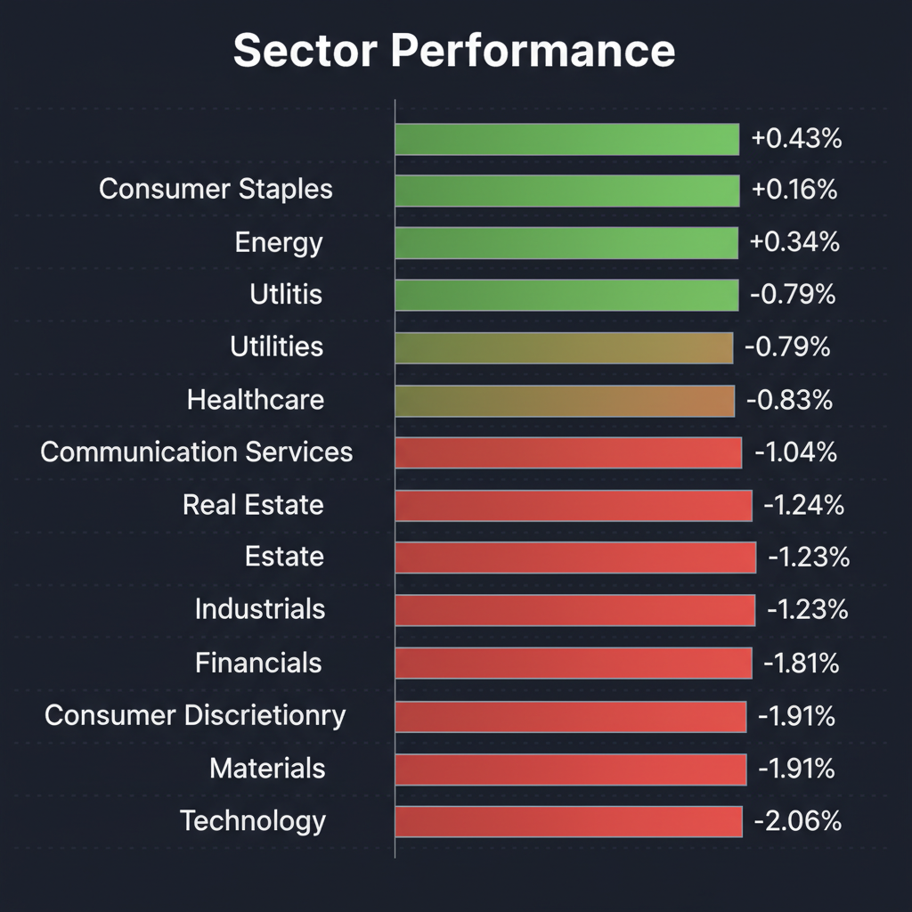
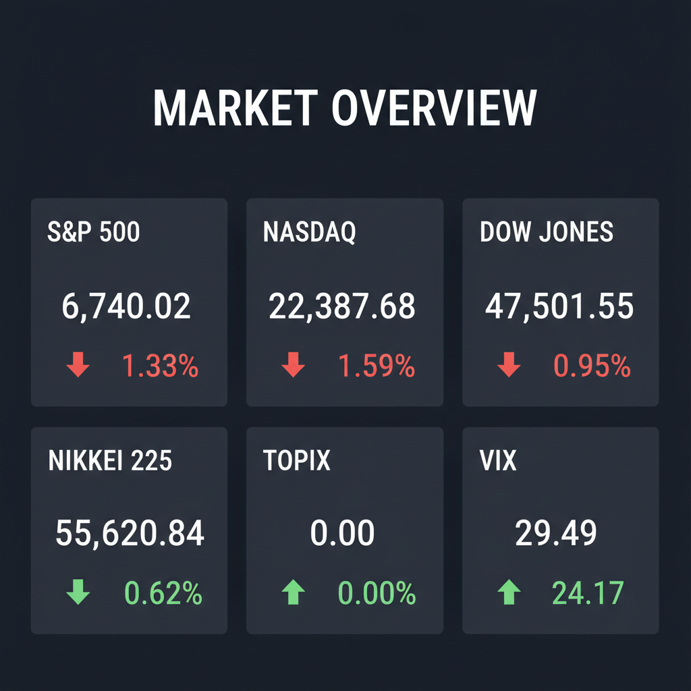

Daily Investment Report - 2026-03-08
Generated: 2026/3/8 8:10:13


投資チームミーティングの議長として、各エージェントの分析と本日の市場データを統合し、最終的な投資戦略レポートを作成いたしました。
1. エグゼクティブサマリー
* VIX指数が29台へ急騰し、これまでの「AI主導の適温相場」の楽観論から、インフレ高止まりと景気減速を警戒する強烈な「リスクオフ局面」へと急転換しています。
* ハイテク・一般消費財から、生活必需品や公益事業といったディフェンシブセクターへの大規模な資金逃避（セクターローテーション）が明確に発生しています。
* ボラティリティの急拡大と日米金利差縮小に伴う「円高への反転リスク」に備え、安易な押し目買いは避け、防御的ポジションの構築とキャッシュ比率の引き上げを最優先すべき局面です。
2. 注目銘柄リスト
市場の牽引役であった大型ハイテク株のバリュエーション収縮リスクが高まる中、強固な収益基盤を持ちながら放置されている「中小型バリュー株・インフラ関連株」を優先して取り上げます。
強気（買い推奨）
*
Atkore Inc. (ATKR) [時価総額 約50億ドル]: AIデータセンターの建設ラッシュやインフラ更新の恩恵を直接受ける電設資材メーカーであり、営業利益率25%前後という高収益ながら予想PER約10倍と極めて割安に放置されています。
*
マクニカホールディングス (3132) [時価総額 約2,800億円]: AIサーバー向け半導体需要を独占的に取り込む国内商社最大手であり、ROE15%超の収益力に対し予想PER約8倍、配当利回りも高く、下値抵抗力の強いディフェンシブなAI関連株です。
*
SWCC (5805) [時価総額 約1,600億円]: AI電力網を支える国内の大手電線メーカーであり、構造改革による利益率改善とPBR1倍割れ是正に向けた株主還元強化のシナリオが明確な、業績変貌型バリュー銘柄です。
中立（様子見）
*
Hims & Hers Health (HIMS) [時価総額 約40億ドル]: GLP-1（肥満症治療薬）のオンライン低価格提供により売上成長率40%超と黒字化を達成していますが、予想PERが約40倍と高く、相場全体の調整によるバリュエーション低下リスクがあるため、十分な押し目を待つべきです。
*
QPS研究所 (5595) [時価総額 約500億円]: 小型SAR衛星の圧倒的技術力で防衛・観測の巨大な潜在市場を持ちますが、マクロ環境悪化による資金調達リスクや極端なボラティリティの高さから、打診買いにとどめ展開を見極める必要があります。
弱気（警戒）
*
AST SpaceMobile (ASTS) [時価総額 約30億ドル]: 宇宙からの直接通信という革新的なテーマを持ちますが、利益を生み出していない赤字のグロース株であり、高金利環境下での資金枯渇懸念や、市場パニック時の無差別な売り圧力を最も受けやすい危険な銘柄です。
3. セクター推奨ランキング
* 1位: 生活必需品 (XLP) - 景気減速やインフレ粘着性に伴う消費者の購買力低下に対して最も強い防御力を持ち、現在の資金逃避の主要な受け皿としてテクニカル的にも強いブレイクアウトの兆候を見せています。
* 2位: 公益事業・電力 (XLU) - 伝統的な不況抵抗力（ディフェンシブ性）に加え、AIデータセンターの莫大な電力需要を支えるという「インフラ的成長テーマ」を兼ね備えたハイブリッドなセクターです。
* 3位: ヘルスケア (XLV) - マクロの逆風に強い安定性を持ちながら、GLP-1という独立した巨大な成長ドライバーを有しており、バーベル戦略の一角として機能します。
* 4位: 日本の金融セクター - 日銀の金融政策正常化（追加利上げ）による利ざや改善の恩恵を直接受け、PBR是正のための自社株買いなど株主還元余力も大きいバリューセクターです。
* 5位: 一般消費財・サービス (XLY) - インフレと貯蓄の枯渇により中低所得者層の消費余力が限界に達しており、業績下振れリスクが極めて高いためアンダーウェイトを推奨します。
* 6位: テクノロジー (XLK) - 巨額のAI設備投資に対する「投資対効果（ROI）」への疑念が浮上しており、極度に拡大したバリュエーションと買われすぎ水準から、現在最大の調整（下落）リスクを抱えています。
4. 今週の注目イベント
* 米・雇用統計（非農業部門雇用者数・失業率）の発表：労働市場の急減速（ハードランディングの予兆）がないかを確認する最重要指標
* 米・インフレ指標（CPI・PPI）の発表：「インフレの粘着性」が継続しているか、あるいはFRBの利下げを正当化できる水準まで鈍化しているかの確認
* 日銀・金融政策関連の動向と要人発言：国債買入れ減額（QT）の規模と追加利上げのタイミング、およびそれに伴う急激な円高反転トリガーの探り合い
* 主要小売企業の決算発表動向：ウォルマートなど低価格帯への「代替消費シフト」の実態と、個人消費の底堅さの確認
5. リスク要因
* VIX急騰に伴う機械的売りの連鎖リスク：ボラティリティが30に迫る中、クオンツファンド等によるシステマティックな投げ売りがサポートラインを次々と底抜けさせるフラッシュ・クラッシュの危険性。
* AI設備投資のROI欠如とバブル崩壊リスク：少数のメガテック企業に極度に集中した市場において、巨額投資の収益化が遅れると判明した瞬間、一気にバリュエーションが収縮するリスク。
* スタグフレーションの台頭：景気が減速しているにもかかわらず物価が高止まりし、FRBが「利下げしたくてもできない」状態に陥り、株式と債券が同時に売られる最悪のシナリオ。
* 急激な円高への巻き戻しショック：米国の利下げ観測と日銀のタカ派傾斜により、円キャリートレードが強制的に巻き戻され、日本株（特に輸出前提の最高益シナリオ）が崩壊し海外マネーが急速に流出するリスク。
6. アクションアイテム
* 株式のネット・エクスポージャー（総露出）を直ちに通常の50%以下に引き下げ、現金（キャッシュ）比率を大幅に高めてポートフォリオを防御的な体制に移行してください。
* 利益の乗っている高PERのハイテク・AI関連銘柄については利益確定売りを行うか、直近の主要サポートライン（50日移動平均線など）のすぐ下に厳格なストップロス（逆指値）を設定してください。
* ポートフォリオの残りの株式部分は、マクニカHDやSWCC、Atkoreなど、強固なフリーキャッシュフローと低いバリュエーションを併せ持つ「中小型のバリュー／インフラ銘柄」および「ディフェンシブETF（XLP, XLU）」へシフトさせてください。
* テールリスク（市場全体の急落）に備え、S&P 500やNASDAQに対する「5%〜10%アウト・オブ・ザ・マネーのプットオプション」を購入し、ヘッジを構築することを推奨します。
* 「落ちてくるナイフ」を掴むような中途半端な押し目買い（特に赤字の中小型グロース株）は絶対に避け、日足チャートで明確な底打ちシグナル（長い下ヒゲや出来高を伴う大陽線）が確認できるまで新規エントリーは見送ってください。